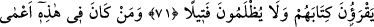
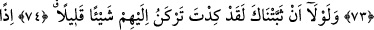
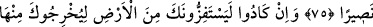
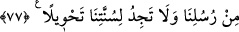

HER TOPLULUĞU
ÖNDERLERİYLE ÇAĞIRACAĞIZ
71. Her insan topluluğunu önderleri ile birlikte çağıracağımız o günde kimlerin
amel defteri sağından verilirse, onlar, en küçük bir haksızlığa uğramamış olarak
amel defterlerini okuyacaklar.
72. Bu dünyada kör olan kimse ahirette de kördür; üstelik iyice yolunu
şaşırmıştır.
73. Müşrikler, sana vahyettiğimizden başka bir şeyi yalan yere bize isnad etmen
için seni, nerdeyse, sana vahyettiğimizden saptıracaklar ve ancak o takdirde seni
candan dost kabul edeceklerdi.
74. Eğer seni sebatkâr kılmasaydık, gerçekten, nerdeyse onlara birazcık
meyledecektin.
75. O zaman, hiç şüphesiz sana hayatın ve ölümün sıkıntılarını kat kat tattırırdık;
sonra bize karşı kendin için bir yardımcı da bulamazdın.
76. Yine onlar, seni yurdundan çıkarmak için nerdeyse dünyayı başına dar
getirecekler. O takdirde, senin ardından kendileri de fazla kalamazlar.
77. Senden önce gönderdiğimiz peygamberler hakkındaki kanun (da budur).
Bizim kanunumuzda hiçbir değişiklik bulamazsın.
“Her insan topluluğunu” Âdemoğullarından her topluluğu “önderleri ile birlikte
çağıracağımız o günde” yâni tâbi oldukları peygamberle çağırırız. Onlara: “Ey
Mûsâ’nın ümmeti, Ey Îsâ’nın ümmeti” diye seslenilir. Ya da önde gelen din